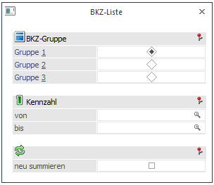
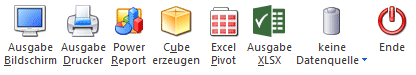
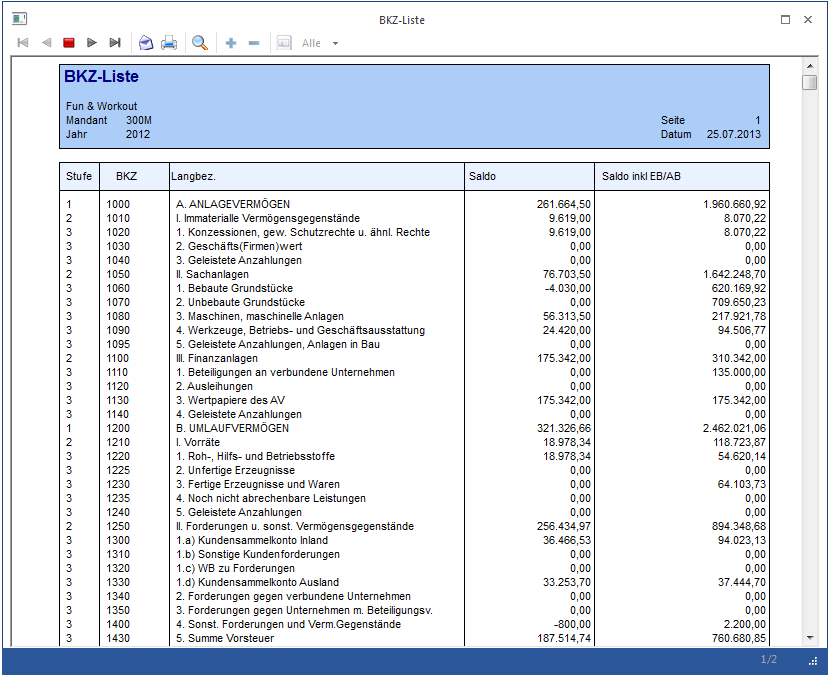

Im Menüpunkt
1 Auswertungen
1 BKZ-Liste
kann eine Liste aller BKZ-Zahlen ausgedruckt werden.
Der Anwender entscheidet, ob er eine Liste am Bildschirm oder einen Ausdruck der Bilanzgliederungskennzahlen abrufen will:

Ø BKZ-Gruppe
Über diese Radio-Buttons kann gewählt werden, nach welcher der 3 voneinander unabhängigen BKZ-Gruppen die BKZ-Liste ausgegeben werden soll.
Ø Kennzahl von / bis
Hier besteht die Möglichkeit den Umfang der Ausgabe über die BKZ-Nummer einzugrenzen.
Buttons

Ø Ausgabe Bildschirm
Mit Hilfe des Buttons "Ausgabe Bildschirm" oder der Taste F5 wird die Auswertung am Bildschirm ausgegeben.
Ø Ausgabe Drucker
Durch Anwahl des Buttons "Ausgabe Drucker" wird die Auswertung am Drucker ausgegeben.
Ø Power Report
Durch Drücken des Buttons "Power Report" wird die Auswertung auf Basis von Cube-Daten grafisch dargestellt. Die Ausgabe ist individuell anpassbar und erfolgt in der Form von "Widgets", die unterschiedlichsten Darstellungen ermöglichen.
Ø Cube erzeugen
Wenn die Option "Cube erzeugen" gewählt wird (nur möglich, wenn auch die entsprechende Lizenz dafür vorhanden ist), dann wird die BKZ-Liste im "Olap Viewer" angezeigt. In diesem können die Daten nach verschiedenen Gesichtspunkten ausgewertet werden.
Ø Excel Pivot
Durch Anwahl des Buttons "Excel Pivot" werden die selektierten Zeilen in Form einer Pivot Ausgabe in Microsoft Excel (2007 oder höher) angezeigt.
Ø Ausgabe XLSX
Mit Hilfe des Buttons "Ausgabe XLSX" wird die Auswertung mit den von Ihnen definierten Selektionen an Microsoft Excel übergeben.
Ø Datenquelle
Mit Hilfe dieser Auswahl kann definiert werden, ob und wie eine Datenquelle (d.h. ein Snapshot oder eine MasterView) verwendet werden soll.
ü Keine Datenquelle
Bei Auswahl
von "keine Datenquelle" wird keine zuvor angelegte Datenquelle genutzt. D.h. die
Daten werden von der WinLine "live" ermittelt und in der gewünschten Form
ausgegeben.
Hinweis
Da die BI-Ausgabe (z.B. Cube oder Power Report) immer eine Datenquelle benötigt, wird im Hintergrund eine temporäre Datenquelle (Snapshot) gebildet.
ü Datenquelle
erstellen/aktualisieren
Die Daten werden zur Laufzeit ermittelt und an einen
zu definierenden Snapshot übergeben. Nach dem Füllen der Datenquelle wird die
gewünschte Ausgabevariante über die Datenquelle erzeugt. Dieser Vorgang kann mit
einer Zeitverzögerung verbunden sein, da die Daten zusätzlich gespeichert werden
müssen.
ü Datenquelle verwenden
Bei der
Verwendung eines Snapshots werden die Daten direkt aus der Datenquelle gelesen,
d.h. die für die Ausgabe benötigten Daten können ohne Verzögerung in der
gewünschten Variante ausgegeben werden.
Wird hingegen eine MasterView
gewählt, so werden die Daten für die Ausgabe "live" ermittelt, wobei diese so
aktuell sind wie die zugrunde liegenden Datenquellen.
Hinweis
Der Button "Datenquelle verwenden" wird nur angeboten, wenn für diesen Bereich (bezogen auf den aktuellen Benutzer / Mandanten) zumindest eine private oder öffentliche Datenquelle existiert. Des Weiteren steht die Ausgabevariante "Ausgabe Bildschirm" und "Ausgabe Drucker" nicht zur Verfügung.
Hinweis
Weitere Informationen zum Thema "Datenquellen" entnehmen Sie bitte dem Kapitel "Die Datenquelle".
Ø Ende
Das Fenster wird geschlossen.
Hinweis
Die drei BKZ-Gruppen können im Menü…
1 WinLine FIBU
1 Stammdaten
1 BKZ-Stamm
… angelegt werden.
Ø neu summieren
Ist diese Checkbox aktiviert, werden die BKZ-Summen neu berechnet. Bleibt die Checkbox inaktiv, werden die Werte des letzten Summationslaufes ausgewertet.
Angedruckte Informationen
Ø Stufe
BKZ-Stufe, 5 Stufen sind möglich, Stufe 1 ist die oberste Hierarchiestufe, Stufe 5 die unterste. Bei jedem Stufenwechsel (z.B. von 3 auf 2 und von 2 auf 1) wird im Bilanzdruck automatisch eine Zwischensumme gebildet.
Ø BKZ
Andruck der BKZ-Nummer
Ø Bezeichnung
Ausgabe der BKZ-Bezeichnung lt. BKZ-Stamm
Ø Saldo
Gegenwärtiger Saldo der BKZ; Achtung: ist nur aktuell, wenn eine Bilanzsummierung durchgeführt worden ist (d.h. der Menüpunkt Auswertungen / Bilanzen aufgerufen wurde).
Ø Saldo inkl. EB/AB
Gegenwärtiger Saldo inkl. Eröffnungsbuchungen und Abschlussbuchungen
